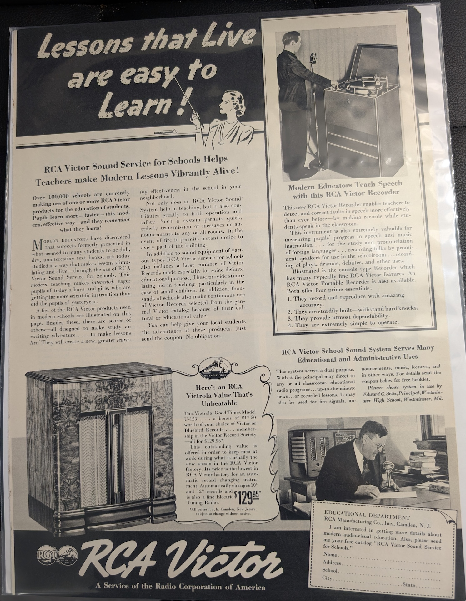
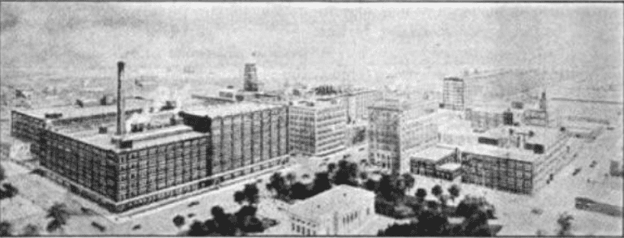
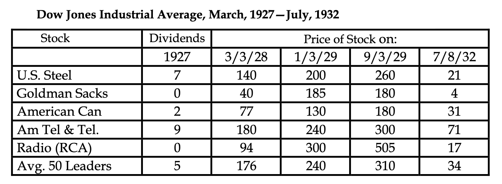

Dr. Eve: ..... Every Main Street is an aurora.
Woman: Wait, you don't mean neon signs?
Dr. Eve: Exactly.
Woman: Oh, you're joking!
Dr. Eve: No, I was never more serious. Do you know how a neon sign works?
Woman: No, I haven't the slightest idea. How do they work?
Dr. Eve: Neon signs are glass tubes filled with neon gas, a very rare element at low pressure. An electrical charge shot through the tube causes the glass to glow.
Woman: Oh, but Dr. Eve, what has an eye-blinding red sign on Main Street got to do with the beautiful soft Northern Lights? Now really.
Dr. Eve: Just this. The Northern Lights are caused by practically the same action.
- “The World Is Yours” radio episode from 1937 explaining Northern Lights.
Welcome again to the fourth blog in my retro poster collection series. In the past, we have explored quite a few diverse posters - from Navitrainers, which were among the earliest flight simulators, to Addressographs and the shortage of typewriters during World War II. This is quite possibly one of the last times I'll be covering posters bought from what used to be my local bookstore, Reader's Corner, as in 2025 I moved from Raleigh, NC, to the Puget Sound region. There are not many local bookstores near where I live. While we have Half Price Books nearby, I've yet to find any interesting retro posters there.
Today, we will explore the following poster:

Just like our past ones, this one too is cut out from a copy of LIFE magazine. Particularly, it belongs to the March 6, 1939 edition of LIFE magazine. As the bold embellishment at the bottom indicates, this advertisement is sponsored by RCA (Radio Corporation of America) Victor. Encyclopædia Britannica describes RCA's history as follows:
RCA was founded as Radio Corporation of America by the General Electric Company in 1919 to acquire Marconi Wireless Telegraph Company of America (incorporated in 1899). A subsidiary of a British-owned company, Marconi Wireless at that time was the only company capable of handling commercial transatlantic radio communications, and General Electric took it over with the assistance of the U.S. Navy Department, which was eager to keep the technology in American hands. For the following 50 years the company was led by David Sarnoff, who built the company into a modern communications conglomerate.
RCA Victor became its consumer-oriented brand, which originated from a merger with the Victor Talking Machine Company in 1929. While the merger seemed to have taken place on March 15, 1929, speculation about the merger was flying in 1928 too. Here is a stub written by the Associated Press and published in the "Rochester Evening Journal and the Post Express" on December 15th, 1928:
Radio Merger Seen Near ..... Merger of Radio Corporation of America and Victor Talking Machine Company was believed near completion today. It would join companies valued at the close of 1927 at $116,000,000. The general plan of the merger was said to have been worked out, but pending the settlement of minor details announcement was withheld.
The merger of Victor Talking Machine with Radio would be the most important of several steps the R.C.A has taken in its entry into the general “amusement” field. Radio controls the National Broadcasting Company, R.C.A. Photophone, Inc., and is allied with the Radio-Keith-Albee-Orpheum Corporation. It has contracts with Victor and Brunswick-Balke-Collender Company for years.
Victor's contracts with many musical artists would make them available for sound pictures and broadcasting under R.C.A. management.
RCA gained control of the Victor Talking Machine Company through an "exchange of shares" for $54 million (likely a stock swap; the actual cash value of the deal is a bit murky and so I am citing Hagley's findings). Post-merger, an article from the December 1929 edition of Radio Broadcast succinctly describes the landscape and RCA's focus points:
New Company Formed to Manufacture and Sell All RCA Home-Entertainment Apparatus
Effective January 1, 1930, all radio material in the home-entertainment field previously sold under RCA's name will be manufactured as well as sold by the RCA-Victor Corporation. Included in the new arrangements between Radio Corporation, General Electric, and Westinghouse, are radio sets, talking machines, records, and other devices in the home entertainment field. This represents a new step in the activities of the enlarged program of the RCA subsidiaries. The 20 per cent. manufacturing profit retained by General Electric and Westinghouse in the making of radio units exclusively sold by RCA will be removed and the new organization called the RCA-Victor Corporation will encompass the research, engineering, manufacturing, and selling activities which have hitherto been distributed among the constituent companies. The new company will be headed by E.E. Shumaker, now president of the Victor Talking Machine Company.
..... Speculation in the industry is now centering around the probable moves of General Electric, Westinghouse, and Western Electric. Will the radio plants of these companies continue to make sets and appliances, to be sold under the well known trademarks of each, in open competition with the products of the new RCA-Victor corporation? Will Western Electric enter the retail field with a line of tubes and super heterodynes? One well-known figure in radio who would not be quoted remarked that in his opinion another twelvemonth would see separate radio sets (in each of which the Radio Group has strong financial interest) made and marketed by the following: General Electric, Westinghouse, Western Electric, RCA-Victor, and General Motors Radio Corporation. “This new step on RCA's part will enable them to make more sets at a lower price and get them on the market quicker than ever before,” remarked one radio observer.

As you may be aware, 1929 to 1939 marked a dark period in American history due to the Great Depression and its severe economic turmoil. The event was triggered by the Wall Street crash of October 1929, where by 1932 stocks were worth only about 20 percent of their value in the summer of 1929. Naturally, this caused a decline in consumer spending between 1929-39, which surely should have hampered RCA Victor's early ambitions. Nevertheless, the timing of the merger - a few months prior to the crash - should have been a blessing in disguise for them. RCA was the quintessential technology stock of this era, mimicking today's MANGOS and FAANG-like companies. Lecture notes from UH's Digital History mention that on March 3rd, 1928, RCA was trading at $94, which jumped to $300 on January 1st, 1929, and was at $505 on September 3rd, 1929, only to collapse by ~96% to $17 by July of 1932. Note that, RCA underwent a 5:1 stock split sometime in early 1929, so the $17 price is likely to be pre-split.

There is a nuance though. RCA bought Victor at the absolute peak of a bubble in a stock-swap deal! So, it managed to acquire hard durable assets such as factories, contract artists, trademarks, and patents using overvalued paper money. When the bubble burst, RCA was left with tangible assets that could be used to generate revenue in the future. They also performed key business optimizations. As mentioned in the Radio Broadcast article above, the new RCA-Victor Corporation consolidated research, engineering, manufacturing, and selling into one entity. Moreover, it removed "20 per cent. manufacturing profit retained by General Electric and Westinghouse" on radio units. Therefore, owning Victor's factories let RCA manufacture in-house and stopped the 20% margin leak to its parents. All of this should have helped RCA streamline some of its operations going into the Depression.
Anyway, it is nearly a decade after the backdrop of this event that our poster was born - a few months prior to the outbreak of World War 2. While I do not have any concrete evidence, I imagine that the goal of "Radio in Education" was to open a new revenue channel (schools) while consumer radio spending was cratering. In the poster, RCA Victor is marketing a program called "Sound Service for Schools" to modernize education across American schools. They are marketing several products for this. One of these is the "School Sound System" that can be used to direct announcements, educational radio programs, latest news, recorded lessons, emergency evacuation, and music. Then there is the "Recorder" that seems to be used for helping improve students' pronunciation of languages, and helps in replaying talks from prominent speakers only to be later replayed in classrooms. In a localized-classroom setting, it seemed to have the use of streaming plays, dramas, etc. too. A few pages earlier in the same LIFE magazine, I read that:
..... Sherman Institute Vocational School for Indians, Riverside, California, where the descendants of the real native Americans find aid in appreciation of the white man's culture through an NBC program. Class is contrasting Indian tomtom with drum effects just heard during an orchestral broadcast. Radio helps thousands of teachers to make courses more interesting and stimulating to students.
In doing research for this blog, I read about American Indian boarding schools - so the "in appreciation of the white man's culture" part is certainly unsettling.
As you might have imagined, there are a lot of parallels between this and the internet in the education wave. Just like RCA, MOOCs (Coursera, Khan Academy, MIT OCW, and Stanford Online) let a kid anywhere access lectures from the best professors in real-time, no longer limited by what's available locally. Both waves bundled hardware and infrastructure, like Chromebooks and Raspberry Pi kits, with a promise of modernization. And finally, both seemed to arrive against the backdrop of a broader consumer technology boom.
The poster refers to a "Victor catalog" that seemed to be used for selecting the records. I was able to dig through one of these on the Internet Archive, titled "Complete Catalog of Victor Records for 1939-1940". Here is what it has to say about Sound Service for Schools:
Victor Records are used among schools more extensively than any other type of audio or visual aid to learning which requires a reproducing instrument. This use of Victor Records has increased from year to year, until now many such records are made especially for schools. In addition, there are literally thousands of the recordings of fine music which are used as the best source from which to select illustrations for Music History, Music Appreciation, the study of instruments and instrumentation, and for integrating music with the teaching of History, Literature, Science, Geography, Language, Physical Training, and other subjects of the school curriculum. Victor Records actually bring to the classroom the best music of all ages, recorded by the world's leading artists and musical groups.
The Victor Book of the Opera and The Victor Book of the Symphony are used extensively among high schools, colleges and music schools. What We Hear in Music is used by music lovers, music students, music teachers, broadcasting studios, and all types of musical organizations as a convenient, standard and inexpensive reference and textbook. Music and Romance makes music appealing and understandable to students of junior and senior high school age, A Lecture-Laboratory Course in Music Appreciation and the History of Music completely outlines a course of study for college students or adults, to be used with or without the aid of a teacher. Other educational publications include folders and pamphlets designed to aid those who wish to make the most effective use of Victor Records in education. One of the most helpful of these is the booklet, RCA Victor Sound Service for Schools, which may be obtained without charge by writing to the Educational Department, RCA Manufacturing Company, Inc., Camden, New Jersey.
To the best of my understanding, the booklet "RCA Victor Sound Service for Schools" is a lost artifact. I found RCA's above vision to be fascinating - i.e., them trying to reinvent every field through the lens of music. In the entire catalog, I saw no mention of lectures from famous professors or scientists of that time, political speeches meant to inspire students, people from different countries speaking about their cultures and languages, or athletes/coaches discussing ways to hone students' plays. Note that I am not discounting the fact that such a recording was nonexistent. In fact, through initiatives such as the Smithsonian's "The World Is Yours", we know that such programs existed and flourished. Nevertheless, RCA Victor's catalog did not seem keen on promoting any such activity. I strongly suspect two reasons for this. First, this was meant to be a pure "records" catalog rather than a media catalog, and second, music has always been an evergreen commercial commodity with high reusability, whereas lectures and speeches can fade quickly.
While researching the above, I stumbled across ERPI Classroom Films, which later on went on to become Encyclopædia Britannica Films. From its Wikipedia page:
In November 1928, John Otterson of Electrical Research Products Inc. decided to make use of the latest sound technology in 35mm motion pictures and apply it to the 16mm format that was gradually being adopted by colleges and schools with easier-to-use projectors. ..... At first, there was much skepticism of the value of motion pictures as an educational tool in public schools, despite mogul William Fox's willingness to spend $9 million in putting projectors into the nation's classrooms. ..... Newark, New Jersey, was among the first public school systems to incorporate sound movie projectors in their classrooms in 1930. ..... Among the first films to be sold with text brochures to aid teachers were nature documentaries focusing on the time-lapse photography of plants and close-up footage of animals. These were credited to (George) Clyde Fisher of the American Museum of Natural History, borrowing much footage from earlier British Instructional Films. Other early films of importance included a Yale University backed Arnold Gesell covering early child development and a slow motion study of football techniques with popular coaches like Biff Jones of West Point and Harry von Kersburg of Harvard. Dr. Carey Croneis supervised some geology subjects .....
Their entire catalog, with links to certain videos, is available on Wikipedia. It's amazing how we as mankind have a knack for reinventing and refining older problems in new, unique ways - all the while evolving how a new generation interacts with and perceives its surroundings. I do wonder how someone would describe today's "AI in Education" era a century later! And that's it, folks! I will end this research dive with a 1936 ERPI Classroom Film describing the Solar System.